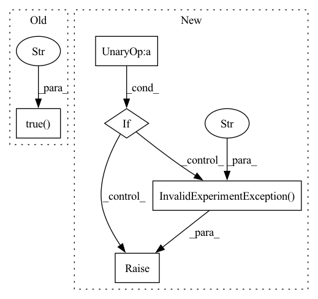

Pattern ID :25548
Before Change
The scaler. It may be wrapped to add additional functionality for use in Determined.
check.true( HAVE_AMP, "Failed to import torch.cuda.amp. PyTorch >= 1.6 required." )
check.false(self._use_apex, "Do not mix APEX with PyTorch AMP.")
check.is_none(self._scaler, "Please only call wrap_scaler or use_amp once.")After Change
The scaler. It may be wrapped to add additional functionality for use in Determined.
if not HAVE_AMP :
raise det.errors.InvalidExperimentException(
"Using context.wrap_scaler() requires PyTorch >= 1.6.",
)
if self._use_apex:
raise det.errors.InvalidExperimentException("Do not mix APEX with PyTorch AMP.")
if self._scaler is not None:
raise det.errors.InvalidExperimentException(
"Please only call wrap_scaler or use_amp once.",
)
if self.models:
raise det.errors.InvalidExperimentException(
"Please call wrap_scaler before wrap_model." ,
)
// We don"t need to check if CUDA is available because if it is not, a GradScaler is
// disabled when initialized, and we allow for disabled scalers to exist.
In pattern: SUPERPATTERN
Frequency: 3
Non-data size: 5
Instances Fragment ID: 77730866
Project Name: determined-ai/determined
Commit Name: dd59244bf78d4c17ff5dfeeac1c47b759900f5bf
Time: 2022-09-22
Author: 103537968+drh-determined-ai@users.noreply.github.com
File Name: harness/determined/pytorch/_pytorch_context.py
M Class Name: PyTorchTrialContext
N Class Name: PyTorchTrialContext
M Method Name: wrap_scaler(2)
N Method Name: wrap_scaler(2)
M Parent Class: det.TrialContext,pytorch._PyTorchReducerContext
N Parent Class: det.TrialContext,pytorch._PyTorchReducerContext
M File Name: harness/determined/pytorch/_pytorch_context.py
N File Name: harness/determined/pytorch/_pytorch_context.py
M Start Line: 371
M End Line: 382
N Start Line: 374
N End Line: 395
Before Change
``wrap_scaler()`` was called directly.
check.true(
auto_zero_grads or self._aggregation_frequency == 1,
"if optimizations.aggregation_frequency is larger than 1, "
"you can only set auto_zero_grads to be true. " ,
)
if not self._should_communicate_and_update():
return
After Change
``wrap_scaler()`` was called directly.
if self._aggregation_frequency > 1 and not auto_zero_grads:
raise det.errors.InvalidExperimentException(
"if optimizations.aggregation_frequency is larger than 1, "
"auto_zero_grads must be set to true. " ,
)
if not self._should_communicate_and_update():
return
Fragment ID: 77730864
Project Name: determined-ai/determined
Commit Name: dd59244bf78d4c17ff5dfeeac1c47b759900f5bf
Time: 2022-09-22
Author: 103537968+drh-determined-ai@users.noreply.github.com
File Name: harness/determined/pytorch/_pytorch_context.py
M Class Name: PyTorchTrialContext
N Class Name: PyTorchTrialContext
M Method Name: step_optimizer(5)
N Method Name: step_optimizer(5)
M Parent Class: det.TrialContext,pytorch._PyTorchReducerContext
N Parent Class: det.TrialContext,pytorch._PyTorchReducerContext
M File Name: harness/determined/pytorch/_pytorch_context.py
N File Name: harness/determined/pytorch/_pytorch_context.py
M Start Line: 695
M End Line: 699
N Start Line: 704
N End Line: 710
Before Change
"aggregation frequency > 1.",
)
check.true(
torch.cuda.is_available(),
"Mixed precision training (AMP) is supported only on GPU slots." ,
)
if self._distributed_backend.use_torch():
// We need to get the pre-wrapped input models to initialize APEX because
if isinstance(models, list):After Change
"aggregation frequency > 1.",
)
if not torch.cuda.is_available() :
raise det.errors.InvalidExperimentException(
"context.configure_apex_amp is supported only on GPU slots." ,
)
self._use_apex = True
if self._distributed_backend.use_torch(): Fragment ID: 77730873
Project Name: determined-ai/determined
Commit Name: dd59244bf78d4c17ff5dfeeac1c47b759900f5bf
Time: 2022-09-22
Author: 103537968+drh-determined-ai@users.noreply.github.com
File Name: harness/determined/pytorch/_pytorch_context.py
M Class Name: PyTorchTrialContext
N Class Name: PyTorchTrialContext
M Method Name: configure_apex_amp(15)
N Method Name: configure_apex_amp(15)
M Parent Class: det.TrialContext,pytorch._PyTorchReducerContext
N Parent Class: det.TrialContext,pytorch._PyTorchReducerContext
M File Name: harness/determined/pytorch/_pytorch_context.py
N File Name: harness/determined/pytorch/_pytorch_context.py
M Start Line: 462
M End Line: 488
N Start Line: 473
N End Line: 497